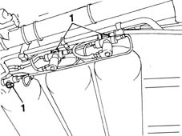
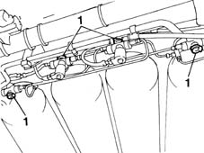
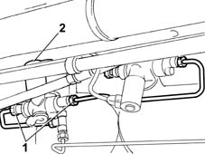
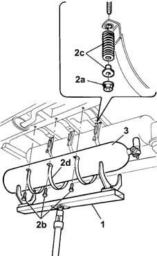

1042A17 (One), side CANISTER left or right, for CNG CANISTER ASSEMBLY - R.R.
- Path
- Procedures > 10 ENGINE UNIT > 1042 METHANE GAS CANNISTER AND TUBES > 1042A METHANE GAS CANNISTER AND TUBES FOR RE-CHARGING > 1042A17 (One), side CANISTER left or right, for CNG CANISTER ASSEMBLY - R.R.
- Kind
- repair procedure (removal / refitting; the operation number is the code)
- Applies to
- engines: 1.6 16v; production: fino a 05/04; only with equipment: BIPOWER and BLUPOWER
- Interactive page
- https://sloeber94.github.io/elrnDB-fMltpl/en/#/2891461
Applies to: engines: 1.6 16v; production: fino a 05/04; only with equipment: BIPOWER and BLUPOWER
 Removing
Removing
 Refitting
RefittingPosition the vehicle on a lift and disconnect the negative battery lead.
Applies to: engines: 1.6 16v; production: fino a 05/04; only with equipment: BIPOWER
1. Before working on the canisters, close the CNG manual cut out valves to prevent the escape of gas during the dismantling operations.

Applies to: engines: 1.6 16v; production: fino a 05/04; only with equipment: BLUPOWER
1. Before working on the canisters, close the CNG manual cut out valves to prevent the escape of gas during the dismantling operations.

Applies to: engines: 1.6 16v; production: fino a 05/04; only with equipment: BIPOWER and BLUPOWER
1. Undo the connectors from the valve assembly.
2. Disconnect the electrical connection for the cut out solenoid valve.
 | Name | Connector |
|---|---|---|
2 | Methane supply solenoid |

Applies to: engines: 1.6 16v; production: fino a 05/04; only with equipment: BIPOWER and BLUPOWER
Place the tool for supporting the canisters on a hydraulic lift prepared for supporting the weight of the canister.
1. Position the tool for supporting the canisters underneath the side canister during the removal operation.
 | Name | Country |
|---|---|---|
1 | Support for CNG canisters | 1.870.732.000 |
2. Undo the inner fixing nuts (2a) and the outer fixing bolts (2b), recover the bushes and the springs (2c) and remove the securing collars (2d).
3. Lower the hydraulic lift and remove the outer canister.

Applies to: engines: 1.6 16v; production: fino a 05/04; only with equipment: BIPOWER and BLUPOWER
With the assistance of a second operator, remove the canister from the equipment and rest it on a suitable support.
Applies to: engines: 1.6 16v; production: fino a 05/04; only with equipment: BIPOWER and BLUPOWER
Refitting
RemovingTake the canister from the support and position it on the supporting tool.
Lift up the tool and position the canister in the special housing.
Fit the securing collars, springs and bushes and secure the inner part using the nuts.
 | Fastening | Component | Ø | Value (daNm) |
|---|---|---|---|---|
- | Nut | CYLINDER FASTENING ELEMENTS | M10 | 1.5 |
Tighten the collar outer fixing bolts.
| Fastening | Component | Ø | Value (daNm) |
|---|---|---|---|---|
- | Bolt | CYLINDER FASTENING ELEMENTS | M8 | 2.5 |
Tighten the valve pipe connectors.
| Fastening | Component | Ø | Value (daNm) |
|---|---|---|---|---|
- | Nut | CNG REPRESSURIZING PIPE CONNECTORS | M10 | 2.5 |
Connect the electrical connection for the valve.
Open the CNG manual cut out valves.
1042E60 CNG CANISTER ASSEMBLY SHIELD/PROTECTION / - R.R.
Connect the battery negative terminal.
Remove the car from the lift.